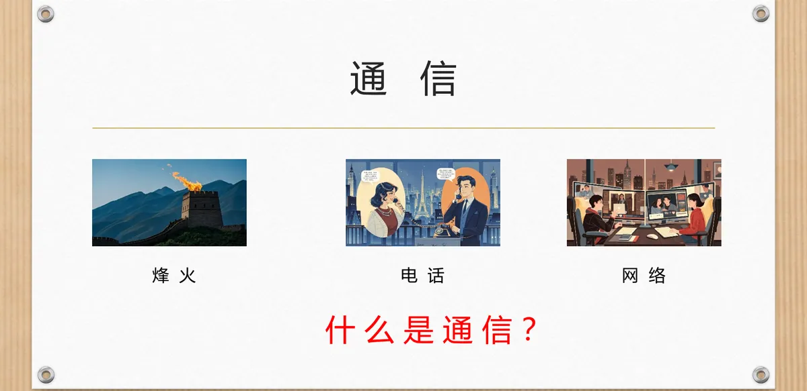
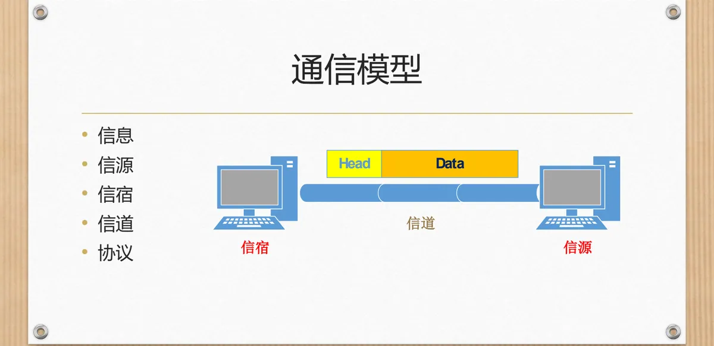
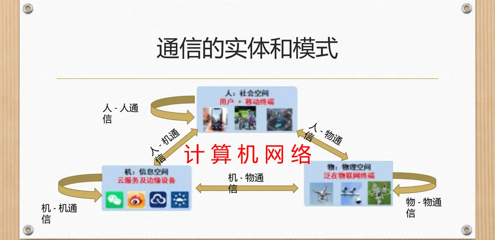
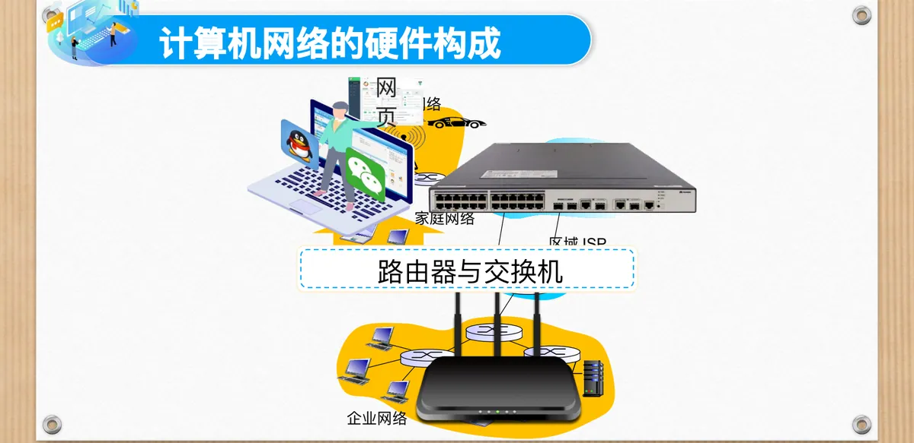
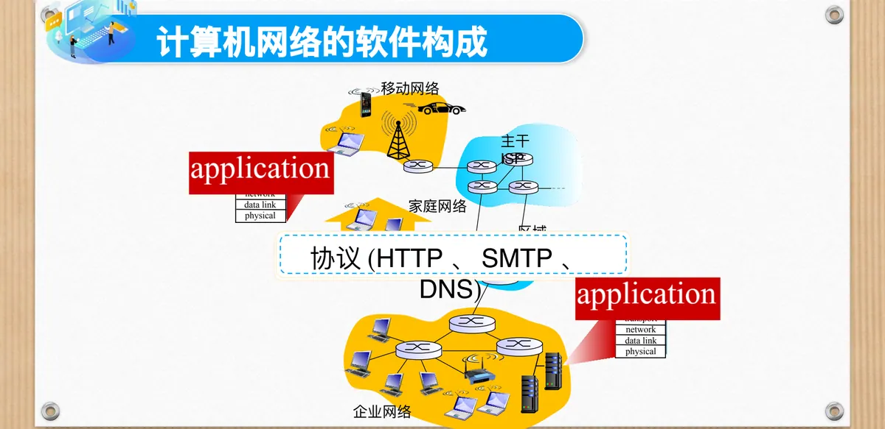
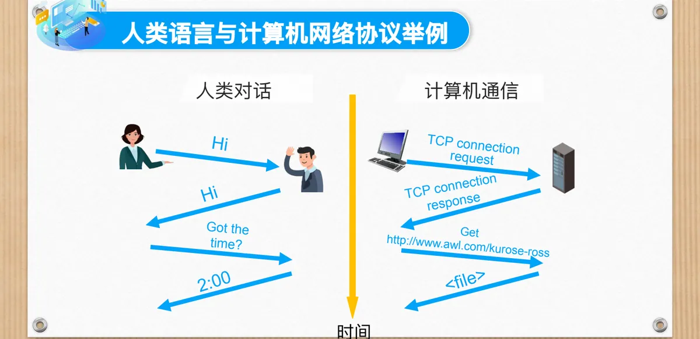

计算机通信与网络 · 第二版讲义 · 第 1 章 计算机网络概述
1.1 通信与计算机网络
本节交代整门课的两个基本词：通信与计算机网络。通信看似日常行为，要让它可靠地发生，必须先回答「谁发、经什么路径发、谁收、按什么规则」；把这套结构放大到多台计算机之间，就得到了计算机网络。下面先建立通信模型与协议的概念，再给出计算机网络的定义与五个要点，然后看它的硬件与软件构成，最后落到网络的功能与对外服务。
1. 什么是通信
人类传递信息的方式一直在变：烽火用烟与光把「有敌情」这一位信息送到远处，电话把声音变成电信号沿线路传送，网络则把信息变成数据在互连的计算机之间转发。

方式在变，角色和环节却没有变。通信是指信息从信源通过信道传送到信宿的过程：信源是发送者，信道是信息传递的路径，信宿是接收者。
定义的最后一句同样关键——消息要按照规定的协议格式进行封装。只有「发送—传输—接收」还不够，双方必须事先约定消息长什么样、按什么顺序交换，接收方才能把比特还原成有意义的内容。
2. 通信模型：信源、信道、信宿与协议
把上面这句话画出来，就是通信模型：信息由信源发出，经信道传送到信宿；而信源与信宿之间还横贯着一条协议，规定双方必须共同遵守的规则。

这个模型是后面各章的共同骨架：研究编码与调制，是看信息怎样被送进信道；研究交换方式，是看中间结点怎样把信息一站一站接下去；研究分层结构，是看两端之间的那条规则如何组织起来。
3. 通信的实体与模式
通信的两端可以是性质很不一样的实体，据此可以把通信分成六种模式：
- 人—人通信：人与人之间的直接交流；
- 人—机通信：人操作计算机、向计算机索取信息；
- 人—物通信：人面向物理对象获取信息或施加控制；
- 机—机通信：计算机之间自动交换数据；
- 机—物通信：计算机采集物理对象的状态或对其下达指令；
- 物—物通信：两个物理设备彼此直接交互。

计算机网络正处在这张图的中央：它以机—机通信为核心，又把其他几种模式连接起来——人经人—机通信接入网络，网络再以机—机、机—物的方式把信息送到另一端的设备或人手上。网络并不取代原有的通信方式，而是给它们一个共同的底座。
4. 计算机网络的定义与五个要点
计算机网络是由若干自治计算机系统通过通信链路和交换设备，按协议互连，实现资源共享与信息传递的系统。这句话信息密度很高，可以拆成五个要点。
- 自治：计算机系统具有独立的操作系统和功能，彼此之间不存在主从关系；
- 互连：通过通信链路和交换设备相互连接，使数据能够在它们之间传送；
- 协议：共同遵守的规则和约定，确保信息传递的准确性和可靠性；
- 资源共享：可以共享软件、硬件和数据资源；
- 信息传递：可以相互传递信息，实现数据交换和通信。
前三条是「网络之所以成为网络」的条件，后两条是建网要达到的目的。把「自治」单独提出来是有道理的：如果一台机器可以被另一台随意控制，它们构成的是主从系统，而不是计算机网络。
5. 计算机网络的硬件构成
从硬件看，一个网络就是「端系统 + 交换设备 + 链路」在不同规模上的组合。
- 主机（端系统）：用户直接使用的计算机、手机等设备，位于网络的边缘；
- 链路：把设备连起来的传输介质，包括光纤、同轴电缆、双绞线和无线电；
- 路由器与交换机：把链路与主机接成网络、并在网络之间转发数据的交换设备；
- 家庭网络与企业网络：覆盖一个家庭或一栋楼范围的网络；
- 移动网络：让手机等移动终端接入的无线网络；
- 区域 ISP 与主干 ISP：由因特网服务提供者 ISP（Internet Service Provider）运营的接入网与骨干网，把无数家庭网络、企业网络连成全球范围的因特网。

网络并不是一个平面：家庭网络接入区域 ISP，区域 ISP 接入主干 ISP，主干 ISP 之间彼此互联，数据就这样一站一站穿过整个网络；网页等内容安放在服务器上，也依靠这套设施送达用户。
6. 计算机网络的软件构成：协议与协议栈
只有硬件，网络还转不起来。软件构成大致分三层：最上面是网络应用程序，即网页浏览、电子邮件等用户直接使用的应用；中间是协议，例如 HTTP、SMTP、DNS，规定应用程序之间怎样交换消息；下面是协议栈，把一系列协议按层次组织起来的整体。

协议栈通常画成上下叠放的几层，五个层次是：应用层 application、运输层 transport、网络层 network、数据链路层 data link 和物理层 physical。分层的意义在于分工——每层只解决自己那一类问题并向上层提供服务，层内实现可以独立变化，层间只通过约定的接口打交道。协议栈为什么这样一层层叠起来，将在 1.5 节展开。
7. 协议：人类语言与计算机通信
「协议」听起来抽象，一段人类对话就能把它讲清楚。甲问「请问现在是几点钟？」，乙答「下午两点」，交流之所以能完成，靠的是一套双方默认遵守的规则。这类规则可以归纳为三个方面：
- 语法：信息的格式，用什么符号、按什么结构表达；
- 语义：信息的内容含义，例如「下午两点」表示一个具体时刻；
- 同步：信息交换的先后次序，先问后答，次序不能颠倒。
把同一段问答用中英文并列写出，正说明语法是双方约定的表达形式：内容相同、形式不同，双方都懂才能交流。人类的语言就是一种协议，计算机之间通信同样需要协议——机器不会「猜」，格式、含义与次序都必须事先约定。
（1）人类对话与计算机通信的对照
并排放在时间轴上，对应关系就很清楚：人类对话先问「Got the time?」，再答「2:00」；计算机通信先由客户端发出 TCP 连接请求（TCP connection request），服务器响应（response），再由客户端提出请求、服务器把文件内容返回。

由此可见，协议把人类语言中隐含的规则显式写了下来：连接先建立，请求有响应，内容有格式。规则固定并被各方遵守，不同厂商、不同系统的计算机才能互通。
8. 协议的标准化
协议要真正管用，必须是「大家都认」的那一份，标准因此成为互通的制度基础。标准的形式是 RFC（Request for Comments，请求评论），它的特殊之处在于开放：文档公开，任何人都可以阅读并提出意见，标准正是在讨论中逐步成熟。
制定计算机网络国际标准的组织主要有 IEEE（Institute of Electrical and Electronics Engineers，电气电子工程师学会）、ISO（International Organization for Standardization，国际标准化组织）和 ITU（International Telecommunication Union，国际电信联盟）。三者各有侧重——IEEE 的 802 系列标准大量用于局域网与物理层，ISO 提出的 OSI 参考模型是网络分层的经典框架，ITU 则长期负责电信领域的国际标准。
9. 计算机网络的功能与服务
回到网络存在的理由。计算机网络的功能可概括为两条：资源共享与信息传递——前者让软件、硬件和数据不再被单台机器独占，后者让不同地点的计算机能够交换数据。从用户能感受到的角度看，它们支撑起了智慧家电、社交网络、新闻浏览、电子游戏、智慧政府、智慧购物和自动驾驶等大量服务。
这些应用差别很大，但在网络这一层依赖的是同一套东西：网络是向应用程序提供服务的基础设施，并通过统一的套接字编程接口把能力交给上层程序。接口统一之后，同一个应用不必关心数据走的是光纤还是无线电，也不必关心自己接在家庭网络还是移动网络上。网络怎样演化到今天，下一节接着梳理。
本节小结
- 通信是信息从信源通过信道传送到信宿的过程，信源是发送者、信道是传递路径、信宿是接收者，消息还要按规定的协议格式封装。
- 按实体性质可分人—人、人—机、人—物、机—机、机—物、物—物六种通信模式，计算机网络以机—机通信为核心，并连接其他模式。
- 计算机网络的五个要点中，自治、互连、协议是成为网络的前提，资源共享与信息传递是建网的目的，「自治」强调不存在主从关系。
- 硬件上由主机（端系统）、链路与路由器、交换机组成家庭网络、企业网络和移动网络，再经区域 ISP、主干 ISP 汇入因特网；软件上由应用程序、协议与五层协议栈构成。
- 协议的三要素是语法、语义与同步；人类的语言本身就是一种协议，把规则固定并公开，才有了以 RFC 为形式的国际标准，制定者包括 IEEE、ISO 和 ITU。
- 计算机网络的功能是资源共享与信息传递，它作为向应用程序提供服务的基础设施，通过统一的套接字编程接口支撑起各类网络服务。